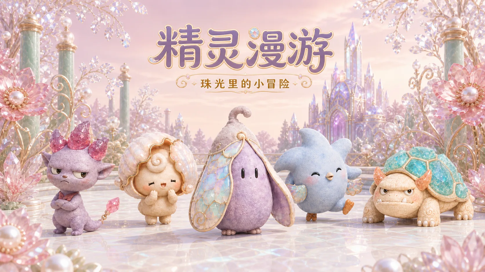
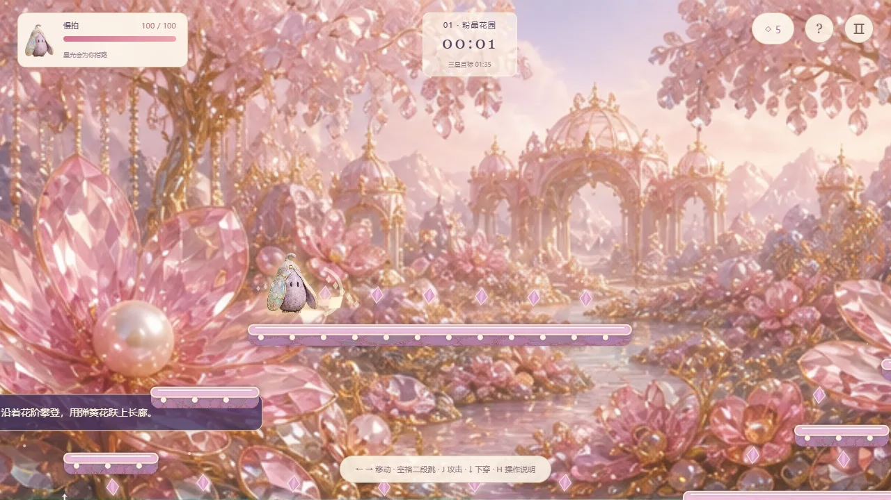

Vibe Coding / PROJECT 12
精灵漫游
五位原创精灵，六片珠宝风景。自由选关，在跳跃、战斗与收集中展开横屏冒险。
- ROLE
- 交互体验与 AI 辅助构建
- TIME
- 项目年份待确认
- TOOLS
- 原生网页、AI 辅助编码；详见项目说明
- TYPE
- Interactive experiment
- STATUS
- Playable prototype

01 / OVERVIEW
Overview
《精灵漫游》是一款融合原创角色设计、珠宝场景与互动动画的横版闯关小游戏。五位软陶质感的精灵，穿行于粉晶花园、珍珠水廊、翡翠瀑谷、紫晶洞窟、琥珀潮岸和月光浮岛。选择喜欢的旅伴与关卡，在多层台阶间二段跳跃、发射晶光、收集旅途印记，挑战自己的三星纪录。每片风景都有独立的场景与机关，让一次小小的冒险，也成为一场关于色彩、材质和角色性格的漫游。
02 / INTERFACE & INTERACTION
Interface & interaction
- 角色：慢拍、棱棱、贝眠、星啾、晶甲五位旅伴 / 五种关卡怪物 / 软陶与珠宝材质
- 场景：六片独立风景 / 多层长短台阶 / 弹簧花、升降台、气流、碎裂晶桥、潮汐喷泉与浮动渡台
- 玩法：六关自由选择 / 二段跳与踩踏 / 晶光攻击 / 回血药水与护盾 / 计时三星挑战 / 18 枚旅途印记
- 动画：伙伴互动展示短片 / 游戏内快速飘入开场 / 行走、跳跃与攻击动作
- 操作：方向键或 A、D 移动，空格二段跳，按住 J 或 X 连续攻击；手机横屏使用触控按钮
- 进度：最高星级、最好时间与旅途印记保存在当前浏览器，可自由重玩、刷新成绩与补齐收藏

03 / PROTOTYPE
Prototype
演示在独立游戏页面打开。本地进度保存在当前浏览器，清理浏览器数据会移除存档。
04 / SCOPE & NEXT QUESTIONS
Scope & next questions
以实际可玩的原型呈现交互与视觉决策。本页不把完成原型等同于市场验证，也不提供未经证实的玩家数量、留存或商业结果。
CONTINUE EXPLORING